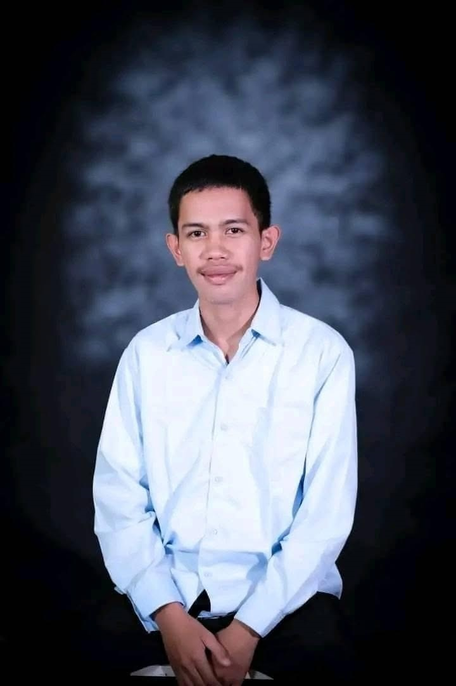

About Me
Learn more about my background, education, and goals as an aspiring IT professional.

Troy L. Selibio
Student • IT Enthusiast • Future IT Professional
Who I Am
I am a hardworking individual who is willing to learn and accept new ideas that have real-world applications. I am a good listener and student who can communicate with others in a group as well as one-on-one. I can motivate people and concentrate my skills to accomplish objectives.
Through education, projects, and practical experiences, I continue to develop my skills in technology, communication, and problem-solving.
Education
Senior High School – General Academic Strand at Basay National High School (2021–2022). Junior High with ICT and Caregiving strands (2015–2020).
View full resume →Work Experience
Computer Shop Manager (2022–2024), Facilitator on Work Immersion Program (2022–2023), and Salesboy at Elena Store (2016–2017).
View experience →Interests
Web development, computer systems, graphic design, animation with Adobe Animate, and building practical IT solutions.
View skills →My Goal
My goal is to become a skilled IT professional who can create useful and reliable technology solutions. I am interested in web development, software applications, computer hardware, and continuous learning in emerging technologies.